Interior - Broken Third Row Seat-back Recline Lever
07-012September 27, 2007
Applies To:
2007 MDX- From VIN 2HNYD28..7H500001 thru 2HNYD28..7H512098
Broken Third Row Seat-back Recline Lever
(Supersedes 07-012, dated February 23, 2007, to update the information marked by the black bars and asterisks)
SYMPTOM
One or both of the third row seat-back recline levers are broken.
CORRECTIVE ACTION
Replace both third row seat-back recline levers with the improved parts.
PARTS INFORMATION
Third Row Seat-back Recline Lever:
P/N 82243-STX-A01ZA (Graphite)
P/N 82243-STX-A01ZB (Gray)
P/N 82243-STX-A01ZC (Beige)
TOOL INFORMATION
KTC Trim Tool Set: T/N S0JATP2014
WARRANTY CLAIM INFORMATION
In warranty:
The normal warranty applies.
Operation Number: 853117
Flat Rate Time: 1.2 hours
Failed Part: P/N 82243-STX-A01ZA
Defect Code: 01801
Symptom Code: 01201
Template ID: 07-012A (Graphite)
07-012B (Gray)
07-012C (Beige)
Skill Level: Repair Technician
Out of warranty:
Any repair performed after warranty expiration may be eligible for goodwill consideration by the District Parts and Service Manager or your Zone Office. You must request consideration, and get a decision, before starting work.
REPAIR PROCEDURE
NOTE:
This procedure shows the replacement of one recline lever. Repeat the procedure on the opposite side.
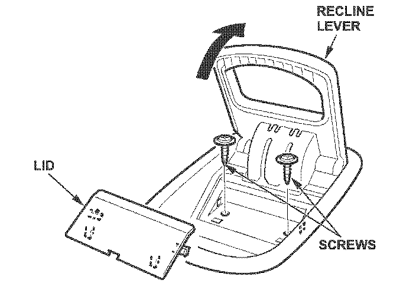
1. Using the KTC trim tool, pry out the lid from the third row seat-back recline lever.
2. Remove the two recline lever mounting screws.
NOTE:
It is not necessary to remove the cable from the lever since the new lever comes with a cable.
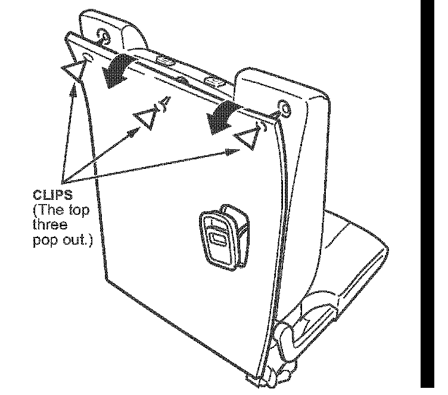
*3. Release the three clips at the top of the back cover from the seat-back frame.*
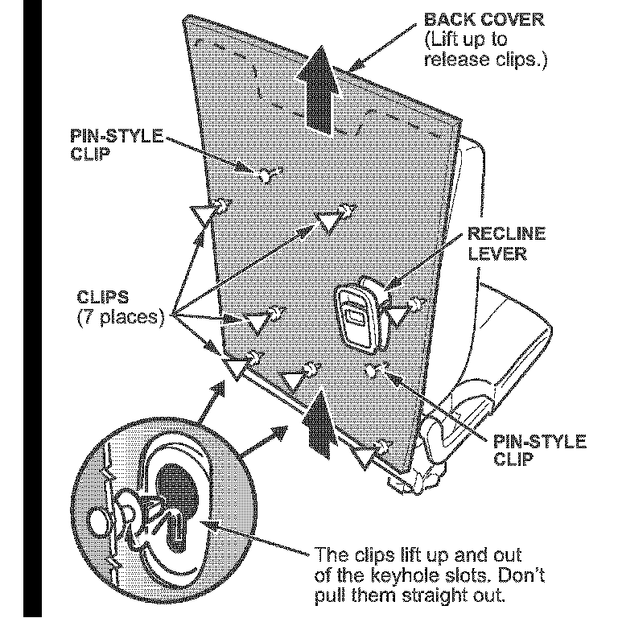
*4. Slide the back cover up to release the remaining clips from the keyholes on the frame.*
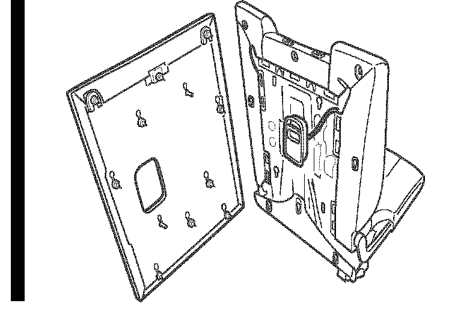
5. Pass the recline lever through the hole in the back cover.
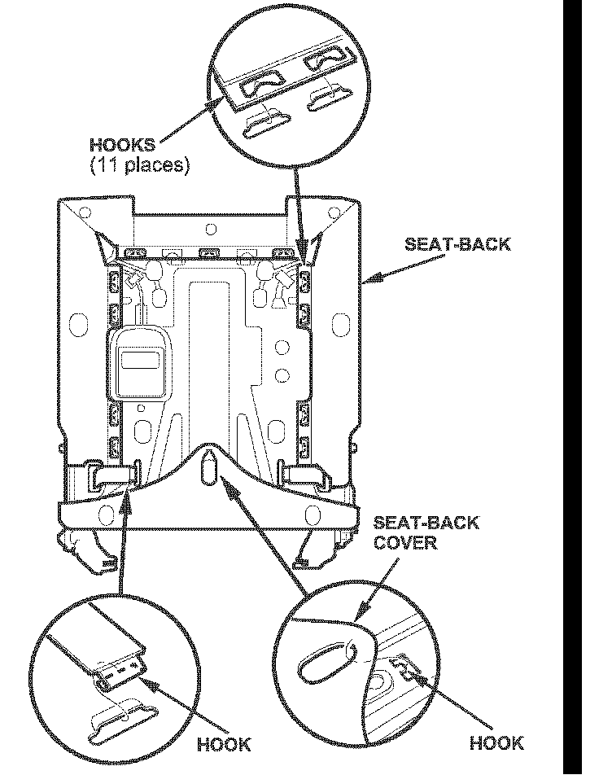
*6. Release all of the hooks from the seat-back.
Unhook the seat-back cover from the hook on the seat-back frame.*
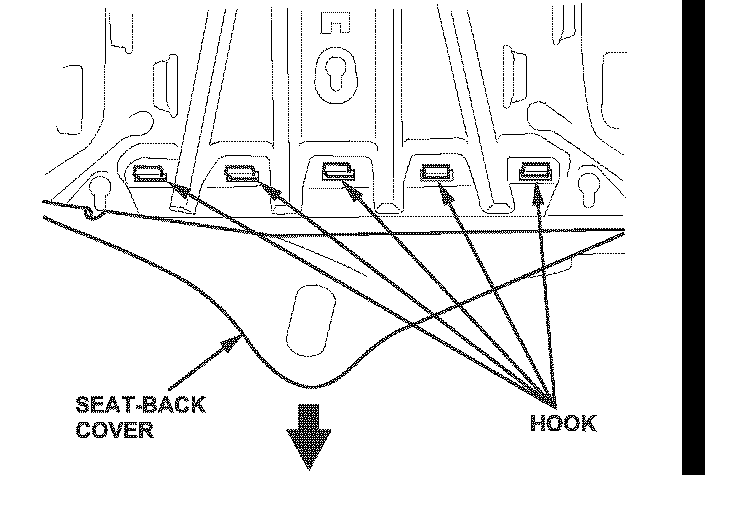
*7. Pull the seat-back cover back, and release the hooks.*
8. Remove the third row seat:
^ Refer to page 20-179 of the 2007 MDX Service Manual (Volume 2), or
^ Online, enter keyword SEAT REMOVAL, and select Third Row Seat Removal/Installation from the list.
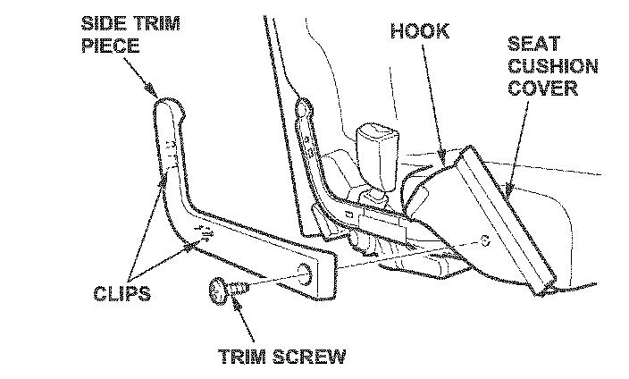
9. Disassemble the seat:
^ Release the hook from under the seat cushion, and pull back the seat cushion cover to access the trim screw.
^ Remove the trim screw, detach the clips, and remove the side trim piece.
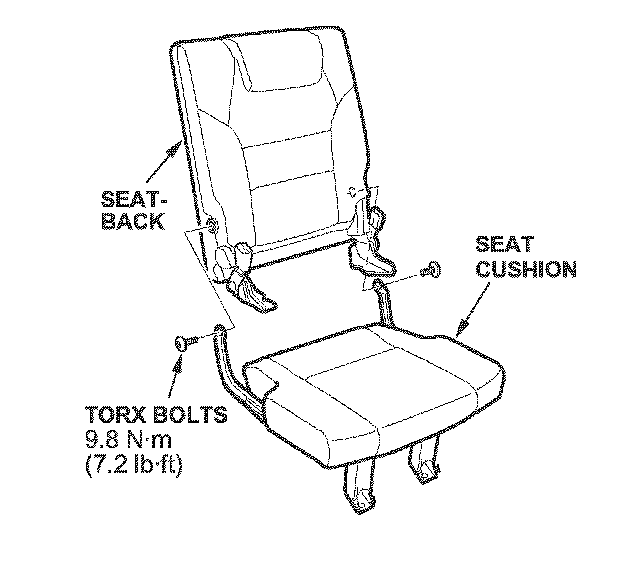
^ Remove the two T30 TORX bolts securing the seat-back.
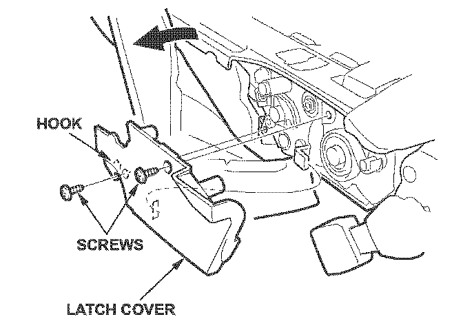
10. Remove the latch cover by removing the two screws and releasing the hook.
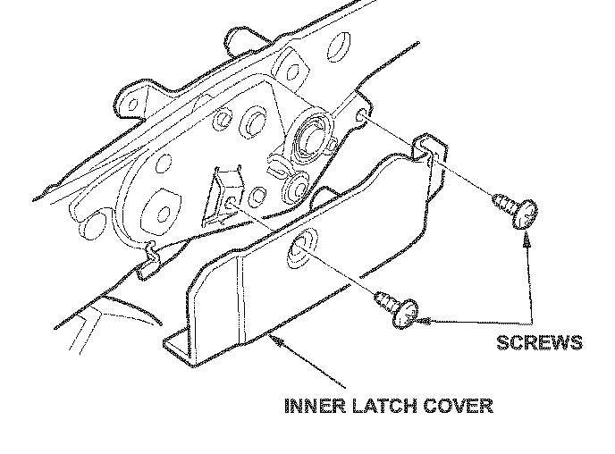
11. Remove the inner latch cover by removing the two screws.
12. Remove the recline lever and cable:
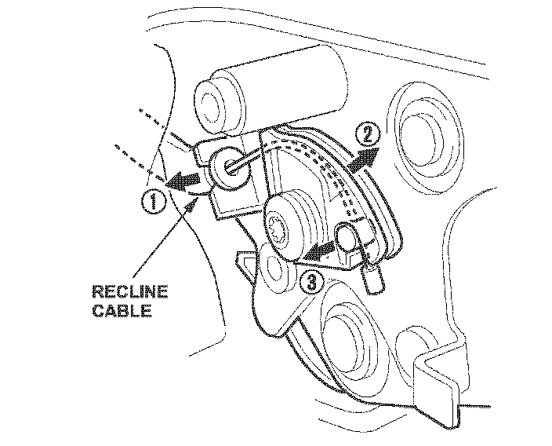
^ Disconnect the recline cable from the latch assembly.
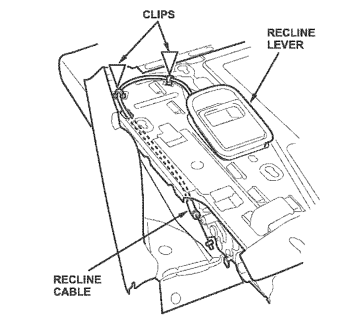
^ Remove the clips, then remove the recline lever and cable.
13. Install the new recline lever and cable in the reverse order of removal:
^ Make sure to route the recline cable properly.
^ Replace any damaged or stress-whitened clips.
^ Make sure the seat unlatches properly and latches securely.

Disclaimer